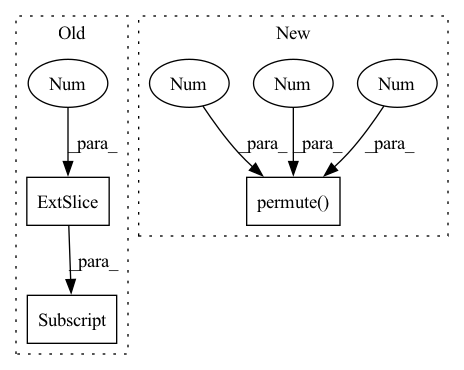

Pattern ID :16779

Before Change
def forward(self, x, attn_mask=None):
B, N, C = x.shape
qkv = self.qkv(x).reshape(B, N, 3, self.num_heads, C // self.num_heads)
q, k, v = qkv[:, :, 0].transpose(1, 2), qkv[:, :, 1].transpose(1, 2), qkv[:, :, 2].transpose(1, 2)
// TODO benchmark vs above
//qkv = qkv.reshape(B, N, 3, self.num_heads, C // self.num_heads).permute(2, 0, 3, 1, 4)
After Change
def forward(self, x):
B, N, C = x.shape
q, k, v = self.qkv(x).reshape(B, N, 3, self.num_heads, C // self.num_heads).permute(2, 0, 3, 1, 4)
attn = (q @ k.transpose(-2, -1)) * self.scale
attn = attn.softmax(dim=-1)
attn = self.attn_drop(attn)
In pattern: SUPERPATTERN
Frequency: 6
Non-data size: 3
Instances
Fragment ID: 56092502
Project Name: feng-lab/pytorch-image-models
Commit Name: 736f209e7d7ebe9a6ac9acf9967a7aba0a86aa4e
Time: 2020-10-26
Author: rwightman@gmail.com
File Name: timm/models/vision_transformer.py
M Class Name: Attention
N Class Name: Attention
M Method Name: forward(2)
N Method Name: forward(3)
M Parent Class: nn.Module
N Parent Class: nn.Module
M File Name: timm/models/vision_transformer.py
N File Name: timm/models/vision_transformer.py
M Start Line: 101
M End Line: 104
N Start Line: 110
N End Line: 110
'>
Before Change
final_scores = torch.tensor([[0]*beam_length for i in range(batch_size)])
encoder_output = self.encoder(features).unsqueeze_(0)
decoder_input = final_captions[:,:,0].unsqueeze_(1).long().to(self.device)
decoder_hidden = encoder_output
decoder_hidden = torch.cat(self.cfg.n_layers*[encoder_output])
decoder_hidden = torch.stack([decoder_hidden]*beam_length).to(self.device)
After Change
//set decoder input
index = index % self.voc.num_words
//print("index shape :",index.size())
decoder_input = copy.deepcopy(index).unsqueeze_(1).permute(2,1,0).to(self.device) // shape
//print("next time step decoder input shape :",decoder_input.size())
final_captions = final_captions % self.voc.num_words
//print("Final caption tensor shape :",final_captions.size())
'>
Fragment ID: 56092967
Project Name: nasib-ullah/video-captioning-models-in-pytorch
Commit Name: 41c7a23067b54653abc772c3730f2ca3da2bad18
Time: 2021-03-22
Author: 41543508+nasib104@users.noreply.github.com
File Name: models/mean_pooling/model.py
M Class Name: MeanPooling
N Class Name: MeanPooling
M Method Name: BeamDecoding(5)
N Method Name: BeamDecoding(5)
M Parent Class: nn.Module
N Parent Class: nn.Module
M File Name: models/mean_pooling/model.py
N File Name: models/mean_pooling/model.py
M Start Line: 277
M End Line: 324
N Start Line: 273
N End Line: 331
'>
Before Change
m_t_0 = torch.sum(
torch.unsqueeze(meta_name_tensor_one_hot, dim=2) * torch.unsqueeze(self.trend_deltas, dim=0), dim=1
)
m_t = torch.unsqueeze(torch.sum(current_segment[:, 0, :] * m_t_0, dim=1), dim=1)
elif self.config_trend.trend_global_local == "global":
// m_t = m_t(current_segment)
// global-local-trend-old
After Change
meta_name_tensor_one_hot.unsqueeze(dim=0).unsqueeze(dim=-1) * self.trend_m.unsqueeze(dim=1), dim=2
)
m_t = torch.sum(
current_segment.unsqueeze(dim=2) * m_t_0.permute(1, 0, 2).unsqueeze(dim=1),
dim=-1,
)
elif self.config_trend.trend_global_local == "global":
'>
Fragment ID: 56093009
Project Name: ourownstory/neural_prophet
Commit Name: 0be013ea4f21af9f7a080102eae7eec8d05966ff
Time: 2022-09-27
Author: alfonso.garcia.decorral@gmail.com
File Name: neuralprophet/time_net.py
M Class Name: TimeNet
N Class Name: TimeNet
M Method Name: _piecewise_linear_trend(3)
N Method Name: _piecewise_linear_trend(3)
M Parent Class: nn.Module
N Parent Class: nn.Module
M File Name: neuralprophet/time_net.py
N File Name: neuralprophet/time_net.py
M Start Line: 483
M End Line: 614
N Start Line: 482
N End Line: 611
'>
Before Change
elif self.interpolation_mode=="linear":
knots = knots[:,None,:]
forecast = F.interpolate(knots, size=self.forecast_size, mode=self.interpolation_mode)
forecast = forecast[:,0,:]
elif "cubic" in self.interpolation_mode:
batch_size = len(backcast)
knots = knots[:,None,None,:]
forecast = torch.zeros((len(knots), self.forecast_size)).to(knots.device)
After Change
forecast[i*batch_size:(i+1)*batch_size] += forecast_i[:,0,:,:]
// [B,Q,H] -> [B,H,Q]
forecast = forecast.permute(0, 2, 1)
return backcast, forecast
// %% ../../nbs/models.nhits.ipynb 9
ACTIVATIONS = ["ReLU",
'>
Fragment ID: 56093040
Project Name: nixtla/neuralforecast
Commit Name: 50298e8199e4a864d663b000c7bb042ecfe8075e
Time: 2022-11-09
Author: kin.gtz.olivares@gmail.com
File Name: neuralforecast/models/nhits.py
M Class Name: _IdentityBasis
N Class Name: _IdentityBasis
M Method Name: forward(2)
N Method Name: forward(2)
M Parent Class: nn.Module
N Parent Class: nn.Module
M File Name: neuralforecast/models/nhits.py
N File Name: neuralforecast/models/nhits.py
M Start Line: 29
M End Line: 48
N Start Line: 31
N End Line: 50
'>
Before Change
)
// dimensions - batch_size, 1, quantiles_size
k_t = torch.transpose(
torch.sum(current_segment.unsqueeze(dim=0)[:, :, 0, :] * trend_deltas_by_sample, dim=2), 1, 0
).unsqueeze(dim=1)
elif self.config_trend.trend_global_local == "global":
// k_t = k_t(current_segment).
After Change
dim=1,
)
// dimensions - batch_size, n_forecasts, quantiles
m_t = torch.sum(past_next_changepoint.unsqueeze(2) * gammas.permute(2, 0, 1).unsqueeze(1), dim=-1)
elif self.config_trend.trend_global_local == "global":
// dimensions - quantiles, segments
'>
Fragment ID: 56092991
Project Name: ourownstory/neural_prophet
Commit Name: 0ed4398da92b4179e52568eba9c53f7a4cad0028
Time: 2022-09-30
Author: alfonso.garcia.decorral@gmail.com
File Name: neuralprophet/time_net.py
M Class Name: TimeNet
N Class Name: TimeNet
M Method Name: _piecewise_linear_trend(3)
N Method Name: _piecewise_linear_trend(3)
M Parent Class: nn.Module
N Parent Class: nn.Module
M File Name: neuralprophet/time_net.py
N File Name: neuralprophet/time_net.py
M Start Line: 474
M End Line: 559
N Start Line: 474
N End Line: 557